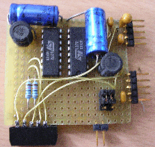

july 2005
RPD Motor Dual L272
Device with dual full H-bridge and dual feedback, based on the L272.
Allowable current 1A per driver, 1.5A peak.
Motor voltage can be individual selected form digital +5V or form 12/24V.
In fact the L272 is a double linear amplifier, but here it's used just as a full H-bridge. There should be made one important remark, because these are linear amplifiers, there's made a lot of effort to suppress the power supply variations. Therefore the L272 can not be used in cases where there's a HF modulation on the power supply, like in model trains.
 
JALcc macro call

JALcc use
JALcc macro expansion